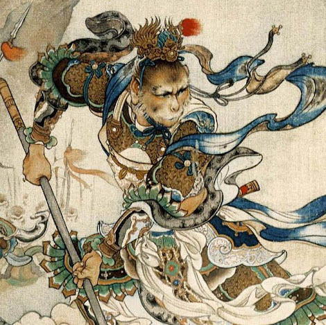

Regele Maimuță din mitologia chineză
| Sun Wukong | |
|---|---|
|
 |
|
| Nume chinez | 孫悟空 (Sūn Wùkōng) |
| Sursă | Călătorie spre Vest |
| Specie | Maimuță |
| Sex | Mascul |
| Loc de origine | Muntele Florilor și Fructelor |
| Caracteristici | |
| Abilități | 72 transformări, magie, viteză |
| Armă | Ruyi Jingu Bang |
| Rol | Discipol al lui Tang Sanzang |
Sun Wukong, cunoscut și sub numele de „Regele Maimuță”, este unul dintre cele mai celebre personaje din mitologia chineză. El apare în romanul clasic Călătorie spre Vest (西游记), unde este protagonistul principal și un simbol al rebeliunii, ingeniozității și transformării spirituale.
Conform legendei, Sun Wukong s-a născut dintr-o piatră magică pe Muntele Huaguo. Încă de la început, a demonstrat inteligență și curaj ieșite din comun.
Sun Wukong posedă o gamă impresionantă de puteri supranaturale:
Datorită naturii sale rebele, Sun Wukong a sfidat autoritatea cerurilor, intrând în conflict cu Împăratul de Jad. În cele din urmă, Buddha l-a învins și l-a închis sub un munte timp de 500 de ani.
Pe parcursul vieții sale, Sun Wukong a provocat haos atât în ceruri, cât și pe pământ, datorită spiritului său rebel și dorinței insațiabile de putere și libertate. După ce a învățat artele taoiste și tehnici magice de la un maestru înțelept, a devenit extrem de puternic, dar și arogant. Acest comportament l-a adus în conflict cu Împăratul de Jad și alte divinități cerești. În cele din urmă, a fost închis sub un munte de Buddha pentru 500 de ani, ca pedeapsă pentru nesăbuința sa.
Eliberat din captivitate, Sun Wukong și-a schimbat destinul când a devenit discipolul călugărului Tang Sanzang. Împreună cu alți tovarăși, a pornit într-o călătorie epică spre India pentru a recupera scripturile budiste, o misiune care a durat 14 ani și a fost plină de pericole și încercări. În această perioadă, Sun Wukong a învățat lecții valoroase despre compasiune, sacrificiu și responsabilitate, devenind nu doar un erou legendar, ci și un simbol al mântuirii și transformării personale.
Sun Wukong este mai mult decât un simplu personaj de poveste; el este un simbol al ingeniozității și determinării umane. Regele Maimuță reprezintă curajul de a sfida autoritatea și de a depăși limitele impuse de societate. De asemenea, el este un exemplu al călătoriei spirituale, ilustrând cum cineva poate evolua de la un stadiu de imaturitate și egoism la unul de înțelepciune și altruism. Influența lui Sun Wukong este evidentă în numeroase adaptări culturale, de la opere de teatru și filme până la benzi desenate și jocuri video, continuând să inspire generații întregi.
Site făcut de
Ursulescu Florin-Alexandru, cl. XII-a A, Liceul Atanasie Marienescu